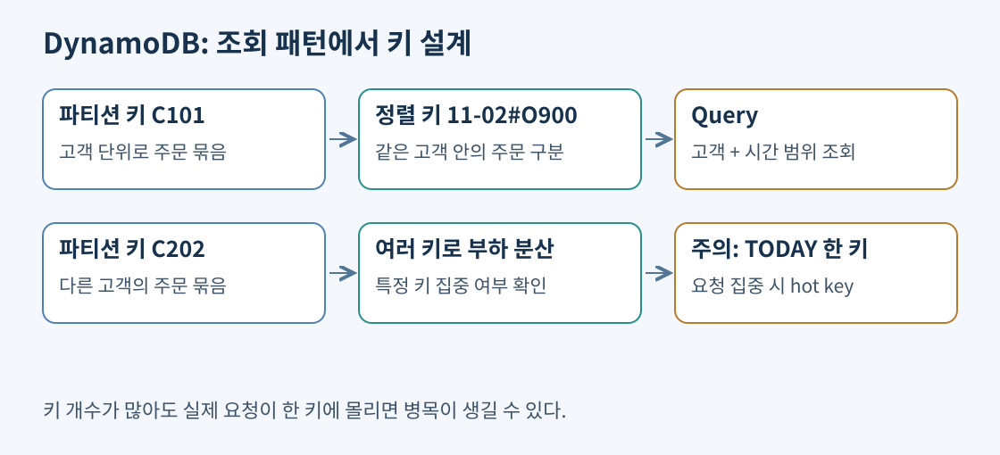
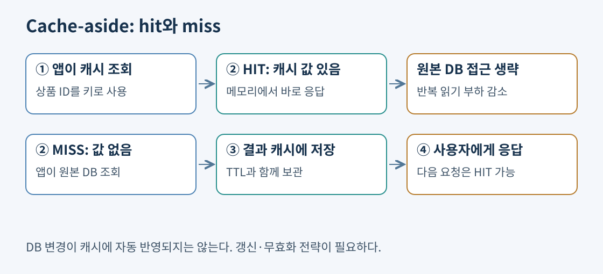
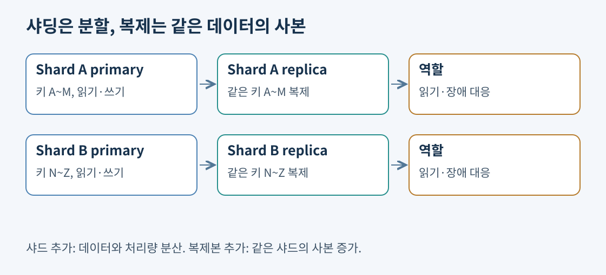

DynamoDB는 키·값과 문서 형태의 데이터를 다루는 관리형 NoSQL 데이터베이스다. 서버를 직접 설치하거나 파티션을 수작업으로 배치하지 않고 테이블을 사용한다. 하지만 서버 관리가 없다는 말이 데이터 모델 설계도 없다는 뜻은 아니다. “어떤 질문으로 어떤 데이터를 가져올 것인가”를 먼저 정해야 한다.
주문 서비스에서 자주 하는 조회를 생각해 보자. 고객의 최근 주문 목록, 특정 주문의 상세, 배송 상태별 처리 목록은 서로 다른 접근 패턴이다. 관계형 DB처럼 모든 조건을 자유롭게 조인하려 하기보다 자주 필요한 조회를 키와 인덱스로 표현한다. 데이터 모양이 JSON이라는 이유만으로 DynamoDB를 고르는 것은 부족하다.
| 개념 | 역할 | 주문 예 |
|---|---|---|
| 항목(Item) | 저장하는 한 건의 데이터 | 주문 하나 |
| 속성(Attribute) | 항목 안의 값 | 고객 ID, 주문 시각, 금액 |
| 파티션 키 | 데이터를 분산하고 조회할 기준 | 고객 ID |
| 정렬 키 | 같은 파티션 키 안의 구분·범위 | 주문 시각과 주문 ID |
기본 키는 파티션 키만 있거나 파티션 키와 정렬 키를 조합한다. 조합 키에서는 두 값의 조합으로 항목이 유일해진다. 예를 들어 고객 C101의 주문을 2026-11-02#O900 같은 정렬 키로 저장하면 고객별 주문을 시간 범위로 조회할 수 있다. 정렬 키는 테이블 전체를 어떤 필드로든 정렬하는 기능이 아니다.

출처: DynamoDB 핵심 구성, 파티션 키 설계
Query는 특정 파티션 키를 지정하고 필요하면 정렬 키 조건을 더해 데이터를 찾는다. Scan은 테이블이나 인덱스를 넓게 읽어 항목을 조사한다. “배송 중인 주문만 필요하다”면서 테이블 전체를 읽고 마지막에 필터링하면, 반환되는 결과가 작아도 읽은 데이터 비용은 작지 않을 수 있다. 필터는 키 설계를 대신하지 않는다.
모든 주문의 파티션 키를 TODAY 하나로 정하면 오늘 데이터 조회는 단순하지만 요청이 한 키에 집중된다. 반대로 조회 때마다 여러 키를 전부 합쳐야 하는 모델은 분산은 잘돼도 앱이 복잡해진다. 실제 읽기·쓰기 분포와 조회 횟수를 보고 분산 방법을 정한다. 테이블 전체 용량이 넉넉해도 일부 키가 뜨거운 hot partition은 제한에 걸릴 수 있다.
예를 들어 특정 대형 고객이 대부분의 주문을 생성하면 고객 ID만으로도 쏠릴 수 있다. 키에 시간 구간이나 쓰기 분산 접미사를 추가하는 방법을 검토하되, 조회 시 여러 구간을 합치는 부담까지 계산한다. 자동 적응 용량이 있다고 단일 키에 무제한 쓰기가 가능한 것은 아니다.
재고를 먼저 읽고 나중에 조건 없이 줄이면 두 구매자가 같은 수량을 읽는 경쟁이 생긴다. 조건부 UpdateItem은 stock >= 구매수량 검사와 차감을 한 원자적 연산으로 묶는다. 일회용 권한도 used=false AND expireAt>현재시각 검사와 사용 처리를 함께 수행한다. TTL 삭제는 며칠 늦을 수 있어 승인 시각 검사를 대신하지 않는다. 여러 항목의 전부 성공·실패가 필요하면 트랜잭션을 사용한다.
일반 단일 항목 읽기는 4KiB 단위, 쓰기는 1KiB 단위로 올림한다. 6KiB 항목 strong 읽기 한 번은 2 RCU, eventual은 1 RCU이며 1.2KiB 쓰기 한 번은 2 WCU다. 트랜잭션은 같은 크기의 일반 strong 읽기·일반 쓰기보다 두 배 용량을 쓴다. 인덱스 비용과 hot key는 별도 계산한다. LSI가 있으면 같은 PK의 기본 항목·LSI 집합은 10GiB 제한이 있고 여러 물리 파티션으로 분할되지 않는다.
조건부 쓰기·용량 계산·캐시 실패의 실제 구성에는 동시 요청 trace, 사전 용량 예약과 키 분산, 다중 리전 일관성, TTL과 분산 채움의 구분을 설명한다. 숫자를 둔 예는 원리를 확인하는 가정이며 특정 AWS 노드의 성능이나 출제 우선순위를 뜻하지 않는다.
출처: 조건식, 용량 계산, LSI와 adaptive capacity
DynamoDB는 읽기·쓰기 요청 처리 용량을 관리하는 두 모드를 제공한다. On-demand는 요청 기반으로 지불하며, Provisioned는 필요한 읽기·쓰기 용량을 정해 두고 사용한다. 항목 크기와 읽기 일관성, 트랜잭션 사용 여부도 소비량에 영향을 준다. 단순 API 호출 수만으로 비용을 비교하면 큰 항목과 강력한 읽기의 차이를 놓친다.
| 모드 | 잘 맞는 상황 | 확인할 조건 |
|---|---|---|
| On-demand | 새 서비스, 불규칙한 이벤트, 예측 어려운 요청 | 급격한 증가·할당량·키 쏠림 조건 |
| Provisioned | 기준 사용량을 예측할 수 있는 지속 부하 | 사용하지 않은 용량도 비용 발생 |
| Provisioned + Auto Scaling | 기본 사용량에 일정한 증감 존재 | 측정·조정 시간과 최소·최대 범위 |
Auto Scaling은 관측한 사용률에 맞춰 설정 용량을 바꾸므로 갑자기 튄 부하를 항상 사전에 흡수하는 기능은 아니다. 예정된 큰 이벤트는 필요한 용량을 미리 준비하는 전략도 검토한다. On-demand도 분산 설계와 서비스 한도에서 자유롭지 않다.
온디맨드가 항상 비싸다거나 Provisioned가 항상 저렴하다는 식으로 판단하지 않는다. 낮은 사용률로 큰 용량을 계속 예약해 놓으면 낭비된다. 반대로 꾸준히 높은 처리량을 소비하면 Provisioned의 이용률과 비용을 비교할 이유가 있다. 저장소, 인덱스, 백업, 리전 간 복제 비용은 요청 모드 선택과 별도로 남는다.
출처: 용량 모드, DynamoDB Auto Scaling, 읽기·쓰기 소비량
고객별 주문을 기본 키로 찾도록 설계했는데 운영자는 배송 상태별 주문 목록도 필요할 수 있다. 보조 인덱스는 다른 키를 통한 조회 경로를 제공한다. 인덱스에 필요한 속성을 복사하는 것을 projection이라고 한다. 인덱스는 저장 공간과 쓰기 유지 비용을 추가하므로 조회 가능성을 무작정 늘리는 수단으로 쓰지 않는다.
| 구분 | LSI | GSI |
|---|---|---|
| 파티션 키 | 기본 테이블과 같음 | 기본 테이블과 달라도 됨 |
| 정렬 키 | 다른 정렬 기준 가능 | 별도 키 조합 가능 |
| 생성 시점 | 테이블 생성 시 함께 | 기존 테이블에 추가 가능 |
| 읽기 일관성 | eventual·strong 선택 가능 | eventual만 지원 |
| 용량 | 기본 테이블 용량 공유 | Provisioned에서 별도 용량 관리 |
LSI는 같은 고객 안에서 주문 금액 순으로 찾는 등의 다른 정렬에 맞는다. GSI는 배송 상태를 파티션 키로 삼는 등 다른 조회 경로에 맞는다. 단, 배송중이라는 상태 몇 개에 모든 요청을 몰면 GSI에서도 hot key가 될 수 있다. 기본 테이블을 잘 분산했다고 인덱스도 자동으로 잘 분산되는 것은 아니다.
쓰기 성공 직후 기본 테이블을 강력한 일관성으로 읽으면 최신의 성공한 쓰기를 반영한다. 최종 일관성 읽기는 전파 중인 최근 변경을 잠시 못 볼 수 있다. 기본 테이블과 LSI에서는 두 방식을 선택할 수 있지만 GSI와 Streams에서는 강력한 일관성 읽기를 요청할 수 없다. GSI 조회에서 항목이 안 보인다고 쓰기 자체가 실패했다고 판단하지 않는다.
Global tables는 여러 리전의 테이블을 복제한다. 현재는 다중 리전 최종 일관성(MREC)과 다중 리전 강력한 일관성(MRSC) 모드가 있다. 모든 Global tables가 언제나 eventual이라는 과거 설명은 현재 기능 전체를 설명하지 못한다. MRSC는 지원 리전 조합·배치와 기능 제약을 확인해야 한다. MREC의 로컬 강력한 읽기를 선택해도 다른 리전의 미전달 쓰기까지 즉시 보인다는 보장은 생기지 않는다.
출처: 읽기 일관성, Global tables 일관성 모드
DAX는 DynamoDB의 반복적인 최종 일관성 읽기를 빠르게 제공하는 메모리 캐시다. 같은 상품이나 설정을 여러 번 읽을 때 DB 읽기 부담을 줄일 수 있다. 강력한 일관성 읽기는 DAX 캐시의 장점을 받는 대상이 아니며 원본으로 전달된다. DAX를 추가해도 쓰기 처리량 부족이나 잘못된 파티션 키가 해결되지는 않는다.
캐시는 오래된 값을 반환할 가능성과 추가 비용을 함께 만든다. 최신 가격이 반드시 필요한 결제 검증과 약간 늦어도 괜찮은 상품 설명 조회를 구분해야 한다. DynamoDB가 빠르다는 이유만으로 DAX가 항상 필요한 것도 아니다. 요구 지연과 반복 읽기 비율이 추가 계층의 이유가 된다.
TTL은 항목마다 만료 시각을 두고 나중에 자동 삭제하는 기능이다. 만료 즉시 정확한 초에 삭제하는 예약 실행 서비스는 아니다. 실제 삭제까지 며칠 걸릴 수 있으므로 만료한 로그인 토큰을 물리 삭제 여부만으로 유효하다고 판단하면 안 된다. 앱은 만료 시각을 직접 확인하고 필요한 조회에서 만료 항목을 제외한다.
Streams는 항목 생성·변경·삭제 이벤트를 담는다. 주문 상태 변경 뒤 알림을 만들거나 다른 검색 저장소를 갱신하는 흐름에 활용할 수 있다. 같은 항목의 변경 순서는 보장되지만 테이블 전체의 모든 항목에 하나의 전역 순서를 부여하는 것으로 이해하면 안 된다. 소비자의 재시도·중복 처리 가능성을 고려해 이벤트 처리도 멱등하게 만든다.
출처: TTL, DynamoDB Streams, Lambda 이벤트 처리
PITR은 보존 범위 안의 시점으로 새 테이블을 복원하는 기능이다. 장기 보관에는 온디맨드 백업도 검토한다. Global tables의 복제는 논리적 삭제도 전파하므로 백업과 다른 목적이다. PITR 보존 기간을 줄인다고 반드시 비용이 줄어드는 것도 아니다. 현재 PITR 요금은 테이블과 LSI 크기 기준이므로 보존 기간 단축만으로 비용을 절감한다고 결론 내리지 않는다.
복원 뒤에는 앱의 테이블 이름과 권한·인덱스·이벤트 연결 등 필요한 구성을 확인한다. 과거 테이블을 만들었다는 것과 운영 트래픽을 복구했다는 것은 다른 작업이다.
출처: DynamoDB PITR, 온디맨드 백업
ElastiCache는 Valkey·Redis OSS·Memcached를 사용하는 관리형 메모리 데이터 저장소다. DB의 자주 읽는 결과, 로그인 세션, 순위표 등 빠른 접근이 필요한 데이터를 저장한다. DAX가 DynamoDB 전용 가속 계층이라면 ElastiCache는 앱이 직접 키와 값을 다루며 다양한 원본 DB 앞에서 사용할 수 있다.

cache-aside에서는 앱이 캐시부터 확인한다. 값이 있으면 hit로 바로 응답한다. 없으면 miss이므로 DB를 읽고 결과를 캐시에 넣는다. 처음 접근하거나 TTL이 끝나면 DB 조회가 필요하므로 모든 요청이 항상 캐시 지연으로 처리되지는 않는다.
TTL은 값을 얼마 동안 보관할지 정한다. DB의 상품 가격이 바뀌어도 캐시가 자동으로 그 사실을 아는 것은 아니다. 쓰기 뒤 캐시를 지우거나 새 값으로 갱신하는 전략이 필요하다. 무효화와 DB 쓰기의 순서, 동시 요청에 따라 오래된 값이 다시 채워질 수도 있다. 가격·재고처럼 정확성이 중요한 데이터는 캐시 사용 범위와 원본 재확인을 명시한다.
출처: ElastiCache 개요, 캐시 전략
인기 키 수천 개가 동시에 만료되면 요청이 DB로 몰리는 cache stampede가 생길 수 있다. TTL을 분산하거나 동시에 한 요청만 원본을 채우게 하는 방식 등을 검토한다. 캐시 장애 때 모든 요청이 DB로 우회할 경우에도 DB가 감당할 수 있는지 확인한다. 캐시를 추가했다는 이유로 원본의 안전 여유를 모두 없애면 작은 캐시 장애가 DB 장애로 번질 수 있다.
출처: 캐싱 모범 사례
| 항목 | Valkey·Redis OSS | Memcached |
|---|---|---|
| 대표 용도 | 자료구조·세션·순위표·캐시 | 단순 키·값 캐시 |
| 노드 기반 복제 | primary와 read replica 구성 | 같은 복제 그룹 모델과 다름 |
| 확장 관점 | shard로 키를 분할, replica로 복제 | 노드에 캐시 데이터 분산 |
| 장애 대응 | 지원 구성의 다중 AZ·자동 장애 조치 | 배포 방식별 지원 기능 확인 |
샤딩은 데이터를 여러 그룹으로 나누어 전체 저장량과 처리량을 늘린다. 복제는 같은 데이터를 여러 노드에 두어 읽기와 장애 대응에 사용한다. 복제본 세 대가 있다고 데이터가 세 조각으로 분산되는 것은 아니다. 엔진 이름뿐 아니라 serverless와 node-based 배포 방식도 확인한다. 특정 배포 방식의 제한을 모든 ElastiCache 구성에 적용하지 않는다.

세션을 웹 서버 한 대의 메모리에만 저장하면 다음 요청이 다른 서버로 갈 때 로그인이 끊길 수 있다. 외부 세션 저장소를 사용하면 여러 앱 서버가 같은 상태를 읽고 서버를 교체하기 쉬워진다. 세션 보존 요구에 맞는 복제·만료·장애 시 동작을 정해야 하며 중요한 영구 데이터의 유일한 사본을 임시 캐시에 맡기지 않는다.
| 데이터와 작업 | 검토 서비스 | 선택 이유 |
|---|---|---|
| 주문·결제, 조인과 트랜잭션 | RDS·Aurora | 관계와 SQL 중심 |
| 정해진 키로 대규모 조회 | DynamoDB | 접근 패턴에 맞춘 분산 키·문서 모델 |
| 반복 조회와 세션 | ElastiCache | 메모리 접근과 원본 부하 감소 |
| MongoDB 호환 API 기반 문서 앱 | DocumentDB | 문서 구조와 필요한 API 호환성 검토 |
| 친구 관계·부정 거래 연결 탐색 | Neptune | 노드와 관계를 따라가는 그래프 조회 |
| Cassandra 드라이버·CQL 앱 | Keyspaces | Cassandra 호환 관리형 서비스 |
| 상품명 검색·로그 색인 | OpenSearch Service | 전문 검색·색인·검색 분석 |
| 수년 매출을 모아 열 단위 집계 | Redshift | 분석용 데이터 웨어하우스 |
DocumentDB가 MongoDB의 모든 버전·기능을 그대로 제공하는 것은 아니다. Keyspaces도 Cassandra 호환 요구의 세부 기능을 점검해야 한다. 호환이라는 단어는 앱 수정이 항상 0이라는 보장이 아니다. 관계형에서 다른 모델로 이전할 때는 테이블을 옮기는 작업 외에 쿼리와 데이터 모델을 바꾸는 작업이 생긴다. 이전 도구와 동종·이기종 이전은 13일 차에서 다룬다.
출처: DocumentDB, Neptune, Keyspaces
OpenSearch에서 검색 결과를 빠르게 가져오는 목적과 주문 원장을 정확하게 저장하는 목적은 다르다. 원본 DB에서 검색용 데이터를 복사해 색인할 수 있으며 검색 결과에는 전파 지연이 생긴다. Redshift는 대량 데이터를 집계하는 분석용이며 주문 한 건씩 처리하는 웹 서비스의 OLTP DB와 구분한다. 열 지향 저장은 집계에 필요한 일부 열만 읽는 데 유리하다. 데이터 웨어하우스와 분석 파이프라인은 14일 차로 이어진다.
시계열은 시간에 따라 발생하는 센서·측정 데이터의 모델이다. 시간 범위와 집계가 핵심이면 보존 기간·입력량·집계 방식을 확인한다. 시계열이라는 데이터 특성만으로 관계형·NoSQL·분석용 저장소 중 하나가 자동 결정되지는 않는다. 같은 서비스도 주문 원장은 Aurora, 세션은 ElastiCache, 상품 검색은 OpenSearch처럼 역할에 따라 저장소를 조합할 수 있다.
출처: OpenSearch 개요, Redshift 구조, AWS 데이터베이스 선택
공식 자료 확인일: 2026-11-02